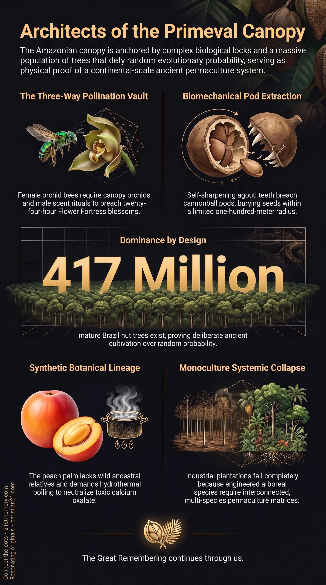

Throat Constriction & Pods
Throat Constriction & Pods — Raw peach palm fruit burns the throat until calcium oxalate crystals are boiled out, and the Brazil nut pod opens only for the agouti.

Throat Constriction & Pods — Raw peach palm fruit burns the throat until calcium oxalate crystals are boiled out, and the Brazil nut pod opens only for the agouti.

The Amazon Is an Engineered Food Forest — Brazil nut trees and peach palms stand as a planted, self-sustaining food forest across the basin.
Impossible Trees represent sophisticated, intentionally engineered botanical systems that defy the orthodox narrative of random evolutionary adaptation and wild natural selection. Concentrated within the Amazon Basin, these arboreal keystones—most prominently the Brazil nut tree and the peach palm—function as living technological artefacts of ancient, large-scale permaculture farming rather than accidental jungle growth. These species are governed by specialised locks that random evolution cannot pick: multi-tiered symbiotic dependencies, impenetrable floral armor, mandatory chemical detoxification, and strict light requirements that necessitate deliberate system design.
The physical reality of these trees directly invalidates the assumption that the Amazon was ever an untouched, virgin wilderness. Instead, the distribution, survival mechanics, and reproductive architecture of these botanical wonders demonstrate that they were established through comprehensive, advanced agroforestry. While modern agricultural methods repeatedly fail when attempting to force these species into conventional, reductionist frameworks, the trees continue to thrive in astronomical numbers within their established native matrices, preserving the blueprints of a profoundly superior botanical science.
The foundational revelation of Impossible Trees is that their staggering proliferation across millions of square kilometers cannot be reconciled with conventional biological models. In an untended, chaotic wild environment, hyper-fragile symbiotic chains inevitably break down. The Brazil nut tree depends upon an unbroken, multi-kingdom triad: the tree cannot self-pollinate, its flowers last for only a single day, pollination requires the female orchid bee, the bee’s reproductive cycle requires canopy bucket orchids, and seed release requires a specific gnawing rodent. Under random evolutionary pressure, an organism with this many restrictive bottlenecks would rapidly face extinction; yet the Brazil nut tree stands as a hyper-dominant species throughout the Amazon, boasting an astonishing population of 417 million mature trees.
Furthermore, modern industrial attempts to commodify these trees expose the fatal flaw of mainstream agronomy. When humans clear mature jungle tracts to plant orderly rows of Brazil nut trees in monoculture plantations, the surrounding canopy orchids vanish, the male Euglossine bees lose their courtship scents, the female bees abandon the area, and the manicured trees become entirely sterile. The tree refuses to produce in isolated plantations because it was designed as an integrated component of an interconnected, multi-species machine.
Equally revealing is the peach palm (Bactris gasipaes), a tree whose genetic lineage presents an inexplicable void: it has no wild immediate relative anywhere on Earth. It exists exclusively as an intentionally domesticated organism, selectively constructed to serve human dietary and material needs across vast geographic expanses. The presence of these fully integrated, impossible species confirms that ancient civilisations possessed an mastery of genetics and long-term ecology that far surpasses contemporary industrial capabilities.
The reproductive cycle of the Brazil nut tree is protected by a biomechanical mechanism known as the Flower Fortress. Blooming exclusively at the beginning of the rainy season, each blossom remains viable for merely twenty-four hours. The flower features a dense, tightly coiled hood that completely encloses and seals off the reproductive organs and nectar repositories. Standard generalist pollinators, such as common honeybees, lack the physical strength required to breach this botanical vault.
Entry is restricted entirely to female Euglossine orchid bees. To achieve cross-pollination, the female bee must execute a sequence of demanding physical actions:
The bee must land directly upon the floral structure and generate enough upward force to pry open the heavy, tensioned hood.
Once the hood is forced upward, the bee must squeeze its large body into the narrow interior chamber.
The bee extends an exceptionally elongated tongue to navigate the winding, coiled interior channels to extract the rich nectar.
During this process, pollen grains are deposited firmly across the bee’s dorsal plate, ensuring transfer to the next tree's Flower Fortress within the fleeting twenty-four-hour window.
This pollination system is bound to a secondary chemical prerequisite. Female orchid bees only inhabit territories where male orchid bees can successfully reproduce. Male Euglossine bees must collect specialized aromatic fragrance compounds secreted by wild, canopy-dwelling orchids, such as Coryanthes (bucket orchids). The male bees store these fragrant chemical cocktails within dedicated cavities located on their hind legs, using the formulated scent as an essential mating perfume to attract females. Because bucket orchids require an undisturbed, highly humid, mature canopy matrix, the elimination of native canopy diversity breaks the aromatic synthesis cycle, eliminates the bee populations, and renders the Brazil nut trees completely barren.
[Mature Canopy Matrix]
│
▼
[Bucket Orchids (Coryanthes)] ──> [Aromatic Perfume] ──> [Male Orchid Bees]
│
▼
[Viable Brazil Nut Canopy] <── [Flower Fortress Opened] <── [Female Orchid Bees]
Following successful pollination, the Brazil nut tree expends fourteen months maturing a single flower into a dense, rock-hard, spherical woody pod roughly the size and density of a cannonball or coconut. These fruit pods weigh several kilograms and plummet from heights exceeding 50 meters, smashing into the forest floor. The exterior casing is so thick and resilient that nearly every creature in the ecosystem is barred from penetrating it, and seedlings trapped inside will inevitably rot without external extraction.
The agouti (Dasyprocta) is the only organism on the planet possessing the anatomical equipment to breach this capsule. The agouti’s chisel-like incisors feature a unique differential hardness: the outer enamel wears down far more slowly than the interior dentin, causing the teeth to self-sharpen every time the animal gnaws on the ligneous shell. The agouti labors for consecutive hours to carve an opening through the pod to harvest the ten to twenty-five wedge-shaped nuts stored within.
Because an individual agouti cannot consume an entire pod’s high-oil yield at once, it consumes one or two nuts and buries the remainder in shallow caches distributed within a radius of approximately one hundred meters. Like squirrels, the rodents frequently forget cache locations. However, the agouti's cache dispersal is mathematically incapable of generating the observed forest density:
The agouti’s seed dispersal radius is strictly limited to approximately one hundred meters from the parent tree.
Wild agoutis experience heavy predation from jaguars, ocelots, raptors, and snakes, resulting in high juvenile mortality and an average adult lifespan of only five to ten years.
An individual agouti directly contributes to the establishment of only one or two surviving adult trees across its entire lifespan.
The Brazil nut tree is a strict gap-dependent specialist; seeds buried beneath closed, shaded canopy stagnate and perish. A seedling can only survive if its cache happens to coincide with a sudden light gap created by a fallen canopy giant.
The statistical probability of an agouti cache coinciding with a treefall light gap cannot account for 417 million evenly distributed, dominant canopy giants across 2.7 million square miles. The presence of these numbers proves that these trees were planted and cultivated through systematic, calculated agroforestry.
The peach palm (Bactris gasipaes) constitutes a parallel botanical lock. Growing in dense, vibrant clusters transitioning from bright yellow to deep orange and peach-toned reddish-pink, the fruit is an exceptional nutritional storehouse loaded with essential fatty acids, carbohydrates, zinc, calcium, and vitamins A and C. The plant also serves structural functions: its trunk is armored in dense rows of black, needle-sharp spines that, once stripped, reveal marajá, a hard, resilient timber utilized for hunting bows, spears, arrows, and durable floorboards. When harvested for palmito (heart of palm), the trunk coppices naturally, sending up rapid new shoots from the root crown to guarantee continuous yield.
The fundamental scientific disruption of the peach palm lies in its taxonomy and physiology:
Absence of Wild Ancestry: The peach palm has no clear wild ancestor or immediate relative anywhere in the botanical record. It is an entirely manufactured domesticate that appears suddenly within the archaeological record in a fully stabilized state.
Chemical Processing Requirement: Raw peach palm fruits are toxic to humans due to high concentrations of calcium oxalate crystals, which inflict intense burning and swelling in the throat. The fruit can only be rendered edible by boiling it in salted water for one to two hours, yielding an oily, chestnut-like staple.
A species that requires complex hydrothermal detoxification to be eaten, lacks any wild progenitor, and yields multi-purpose materials could not have arisen from aimless gathering practices; it was engineered to anchor civilisational nutrition.
┌─────────────────────────────────────────────────────────────┐
│ PEACH PALM (Bactris gasipaes) │
├──────────────────────────────┬──────────────────────────────┤
│ Fruit Clusters │ Boiled 1-2 hrs to remove │
│ (Vibrant Peach Gradient) │ calcium oxalate crystals │
├──────────────────────────────┼──────────────────────────────┤
│ Heart of Palm (Palmito) │ Continuous regeneration via │
│ │ rapid basal shoot coppicing │
├──────────────────────────────┼──────────────────────────────┤
│ Armored Spiny Trunk │ Yields dense, flexible │
│ │ Marajá timber for tools │
├──────────────────────────────┼──────────────────────────────┤
│ Evolutionary Status │ No wild immediate relative; │
│ │ fully stabilized domesticate │
└──────────────────────────────┴──────────────────────────────┘
The distribution of Impossible Trees is directly intertwined with the ancient, continental-scale civilization of the Americas, establishing a continuous cultural and logistical corridor. Archaeological and botanical tracking reveals that Olmec colossal head culture and peach palm cultivation travel together within the older civilisational matrix. Rather than isolated hunter-gatherer bands roaming an unmanaged wilderness, the Americas were inhabited by interconnected societies that shared domesticated crops, advanced material technologies, and sophisticated land management systems.
Mainstream chronologies attempt to limit this technological baseline by establishing rigid temporal anchors. Conventional archaeology labels Caral-Supe (flourishing along coastal Peru between 3000 BCE and 1800 BCE) as the "oldest known" advanced civilization in the Americas. However, the classification of "oldest known" functions merely as a static academic caption rather than a genuine civilisational beginning. Caral-Supe represents an intermediate survival point within a continuous succession of advanced, urban societies that extended back through tens of thousands of years. These cultures did not slowly climb a crude evolutionary ladder; they inherited and maintained advanced, living botanical systems—including the peach palm and the Brazil nut tree—that had been stabilized long before modern historical recording began.
The operational reality of Impossible Trees dismantles foundational dogmas across multiple modern fields:
Agronomic Paradigm Collapse: The complete failure of Brazil nut plantations demonstrates the inadequacy of reductionist monoculture. Modern agriculture cannot domesticate an organism whose operational architecture requires a whole, living ecosystem to function. True abundance is achievable only through complex, multi-tiered permaculture networks.
Destruction of the Primal Wilderness Narrative: The existence of 417 million Brazil nut trees, paired with the universal dispersal of the fully domesticated peach palm, proves that the Amazon Basin is not a virgin rainforest. It is an engineered food forest and an enduring, self-sustaining monument to ancient biological engineering.
Archaeological Correction: Because the biological timeline of these trees demands millennia of deliberate genetic stabilization and multi-kingdom ecological calibration, the current timeline for human habitation and agriculture in the Americas is obsolete. Treating archaeological captions like Caral-Supe as absolute historical baselines obscures the real technological depth of the pre-reset world.
Resource Independence: Both the Brazil nut tree and the peach palm provide complete models of sustainable, high-density nutrition and durable materials that operate entirely outside petroleum-dependent agricultural inputs. They stand as functioning proof that superior, regenerative food systems were designed, implemented, and left operating across the surface of the realm.
This topic is free to share. Support the archive →